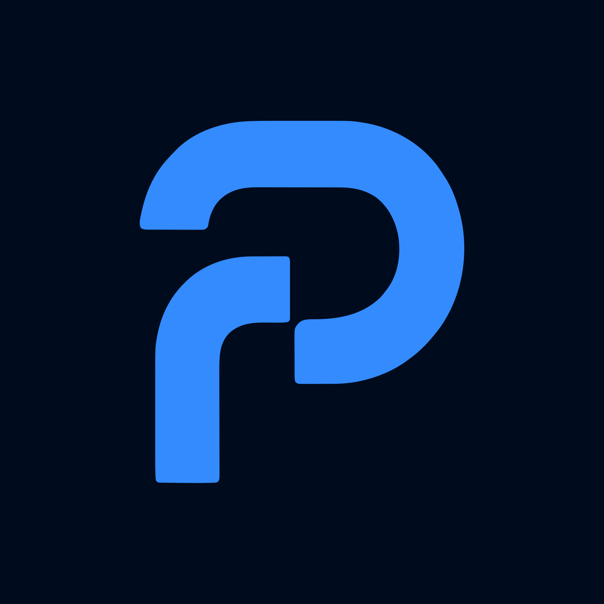
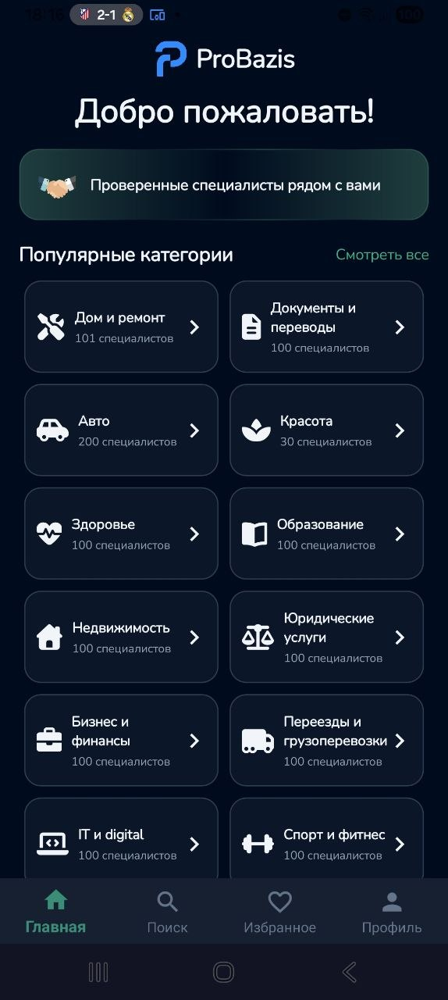
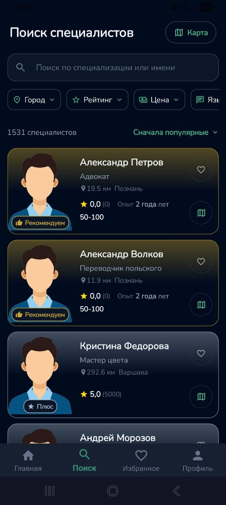
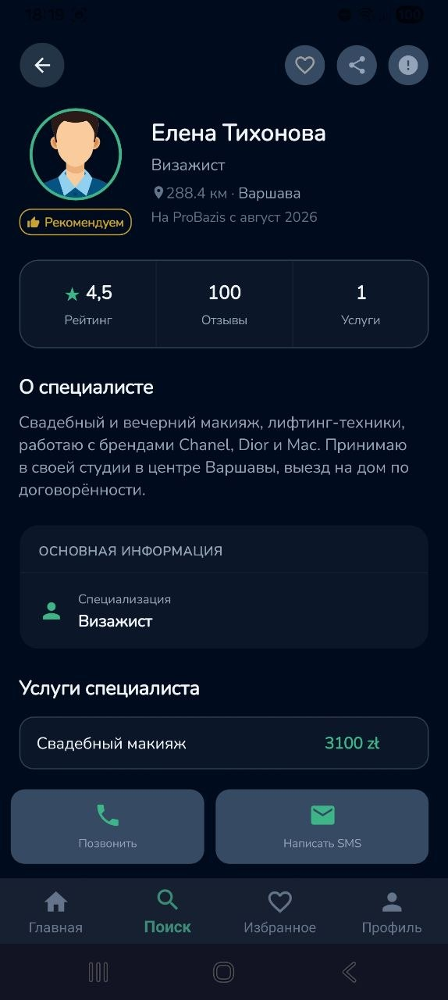

01
Выберите категорию
Откройте нужное направление — от ремонта и авто до образования, здоровья и digital.
Нужная услуга
ProBazisДом и ремонт, документы, авто, красота, здоровье, образование и многое другое. Ищите по городу, цене, рейтингу и языку общения.



Три простых шага — от категории до подходящего специалиста.
Откройте нужное направление — от ремонта и авто до образования, здоровья и digital.
Нужная услугаИспользуйте поиск и фильтры, сравнивайте карточки, рейтинг, расстояние и стоимость услуг.
Поиск и фильтрыПосмотрите описание, услуги и цены. После входа в аккаунт доступны способы связи со специалистом.
Профиль и услугиProBazis собирает специалистов в одном месте. Вы можете отфильтровать результаты и сразу увидеть ключевую информацию ещё до открытия профиля.
В профиле собрана информация о специализации, рейтинге, отзывах, услугах и стоимости. Зарегистрированный пользователь может перейти к доступным способам связи.
Создайте профиль, укажите специализацию, город, языки общения, добавьте услуги и цены. ProBazis помогает клиенту быстрее понять, чем вы занимаетесь и подходите ли вы ему.
ProBazis готовит единое пространство для клиентов и специалистов.